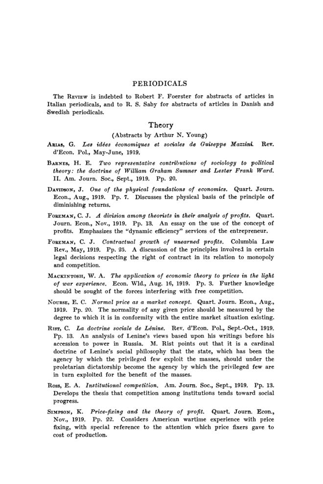

Gardner, os acidentes de trabalho e o imposto de renda dos estados
Leitura: 19 min
Gardner diz que o problema central ainda é produzir mais por habitante; Fisher avalia as leis de indenização por acidente; Lutz, o imposto de renda dos estados; Magee, o crédito para especulação.


Em 1910, segundo a estimativa de King citada por Henry B. Gardner, mais de nove milhões de famílias americanas viviam com menos de US$ 900 por ano, cerca de metade do total. Gardner, da Brown University, abre a American Economic Review de março de 1920 com o discurso que fez como presidente da associação em Chicago, em 29 de dezembro de 1919, e usa a estimativa para uma conta: mesmo dividida por igual, a renda nacional pouco passaria do necessário para uma vida modesta.
A edição, a primeira do volume X, gira em torno de medir antes de reformar. Willard C. Fisher, da New York University, faz o balanço das leis de indenização por acidente de trabalho; Edwin J. Clapp descreve o Bush Terminal, no Brooklyn, como experiência de cooperação entre pequenas empresas; James D. Magee, também da New York University, pergunta se o Federal Reserve Board conseguiu afastar o crédito bancário da especulação na bolsa; Harley L. Lutz, do Oberlin College, revê os impostos estaduais sobre a renda desde 1911; e J. Anderson Fitzgerald, da University of Texas, explica o seguro recíproco contra incêndio. Duas comunicações curtas completam a parte de artigos: Margaret L. Goldsmith, de Chicago, sobre cláusulas de reajuste em contratos coletivos da indústria gráfica, e Paul H. Douglas, da University of Washington, em resposta a uma crítica ao seu método de medir a rotatividade da mão de obra.
O problema econômico é de distribuição ou de produção?
Henry B. Gardner (Brown University) · “The Nature of our Economic Problem” · pp. 1–17
Gardner parte de uma dúvida da profissão. Alguns economistas, diz, haviam perdido a fé nos princípios construídos desde Adam Smith: erraram ao prever os efeitos da guerra, a psicologia avançara sobre os motivos da ação humana e a teoria tomaria como permanentes instituições que mudam. Para ele, as críticas não são tão destrutivas. A previsão é o teste mais severo do conhecimento, e os erros foram de prazo, não de direção: os juros de longo prazo já subiam, e os preços, que continuavam em alta, acabariam por cair. Prevê ainda que o país, agora credor, verá as importações crescerem em relação às exportações.
A guerra, afirma, confirmou o que se ensina em qualquer curso elementar: o poder econômico de um povo é sua capacidade de produzir os bens de que precisa; para produzir mais de uma coisa é preciso consumir menos de outra; e as finanças de guerra são apenas o mecanismo que põe trabalho e capital à disposição do governo. A tarefa, portanto, não é reconstruir a teoria, mas desenvolver o que chama de engenharia econômica.
“Nosso problema não é apenas um problema de distribuição.” (“Our problem is not merely a problem in distribution.”)
Daí a tese: o remédio para a condição dos mais pobres não está numa redistribuição forçada, que Gardner chama de paliativo de pequena potência, mas no aumento da produtividade marginal deles. Lista cinco frentes: eficiência individual, por saúde e educação; organização industrial sem desperdício; cooperação dentro de cada estabelecimento; equilíbrio entre os fatores de produção; e uso racional da riqueza. Pede estatísticas coordenadas e contabilidade uniforme das empresas.
Na questão trabalhista, propõe incorporar os trabalhadores ao sistema, com voz e responsabilidade na gestão, primeiro em cada empresa e depois por ramo; mas não vê vantagem em entregar o controle exclusivo a uma só classe.
As leis de indenização por acidente cumpriram o que prometiam?
Willard C. Fisher (New York University) · “American Experience with Workmen's Compensation” · pp. 18–47
Menos de nove anos depois das primeiras leis eficazes, aprovadas em 1911 no Kansas e em Washington, 42 dos 48 estados, além do Alasca, de Porto Rico e do Havaí, tinham leis de indenização por acidente de trabalho. Fisher vê na rapidez da adoção, e na ausência de qualquer pedido de revogação, a primeira prova de que o sistema funcionou. Empregadores, seguradoras e sindicatos, antes céticos, passaram a apoiá-lo, e a constitucionalidade estava assentada em pelo menos cinco decisões da Suprema Corte.
Os pagamentos cresceram. Em Wisconsin, de 1911 a junho de 1918, somaram US$ 6,917 milhões em dinheiro e assistência médica; em Nova York, US$ 36,631 milhões em três anos e meio. No padrão de Massachusetts de 1918, o país inteiro pagaria de US$ 125 milhões a US$ 150 milhões por ano. Por caso, porém, os valores são pequenos: a indenização média por morte fica perto de US$ 3.000, ou menos.
O maior efeito, para Fisher, está na prevenção. A lei encareceu os acidentes para o empregador, e as seguradoras passaram a ajustar prêmios ao histórico e às condições de segurança de cada cliente. Usinas siderúrgicas com sistemas de segurança completos tinham 167,1 acidentes por mil trabalhadores-ano de 300 dias; sem eles, 507,9. O custo para a indústria é baixo: cerca de 1% da folha, ou um quinto de 1% do custo total.
Os defeitos vêm no fim: períodos de carência de até duas semanas, quando cerca de três quartos das incapacidades terminam nesse prazo; tetos semanais que reduzem as indenizações reais; e, sobretudo, a cobertura estreita. Pela estimativa de Carl Hookstadt, ao menos 7,4 milhões de empregados dos estados com lei não estavam cobertos.
Pequenos fabricantes podem ter as vantagens da grande empresa?
Edwin J. Clapp · “A New York Experiment in Business Co-operation” · pp. 48–58
Clapp trata do problema do espaço nas grandes cidades e de como os empresários o resolvem, em silêncio, antes do governo. Em Manhattan, ao sul da Rua 14, armazéns e fábricas leves pagavam aluguel e seguro altos e uma conta enorme de carreto: os caminhões esperavam nas estações de carga do cais, e cada remessa pequena exigia um veículo para cada estação ferroviária.
A resposta de Irving T. Bush foi o Bush Terminal, no sul do Brooklyn. Dezesseis edifícios industriais cercam pátios com trilhos; o terminal é agente de todas as ferrovias que chegam a Nova York, aplica em geral a mesma tarifa de Manhattan e consolida as remessas dos inquilinos em vagões diretos. O carreto desaparece. Os inquilinos dividem ainda um sistema de sprinklers de US$ 1 milhão, que barateia o seguro, vigilância, hospital, restaurante e serviço de caminhões; oito píeres recebem 27 navios ao mesmo tempo, e cento e trinta armazéns guardam matérias-primas importadas.
O princípio foi estendido à venda. Um Service Building recebe vagões de fabricantes do interior, armazena, reembala e despacha por poucos centavos a cada cem libras-peso. Um International Sales Building de trinta andares, na Rua 42, construído por US$ 3 milhões, expõe por andar os produtos de dezenas de fabricantes, e seu clube de compradores tinha 13 mil membros. O passo seguinte seria organizar o poder de compra de varejistas independentes diante das redes de lojas.
A conclusão de Clapp é que a cooperação enfrenta com sucesso a grande organização quando adota a forma da própria organização: uma agência cooperativa administrada como empresa, que corta as despesas gerais, onde está a principal vantagem da escala.
Pode o Federal Reserve impedir que o crédito vá para a especulação?
James D. Magee (New York University) · “Call Rates and the Federal Reserve Board” · pp. 59–65
A lei do Federal Reserve tentou reservar o redesconto ao comércio, à agricultura e à indústria: papéis emitidos para carregar ou negociar ações não podiam ser redescontados, salvo se garantidos por títulos do governo. Magee mostra como essa exceção, depois da guerra, esvaziou a regra. Os call loans, empréstimos à vista com garantia de ações na bolsa de Nova York, ficaram sob controle de um pool bancário de outubro de 1917 a janeiro de 1919, com taxa em torno de 6%.
Encerrado o pool, as ações subiram a partir de fevereiro de 1919, e os empréstimos na bolsa foram estimados em cerca de US$ 1,5 bilhão de julho a outubro. Em junho, o Federal Reserve Board escreveu aos bancos regionais sobre a tendência à especulação excessiva. Os bancos reduziram por pouco tempo os empréstimos garantidos por títulos de guerra, mas logo voltaram a crescer: era possível redescontar papéis do governo ou repassar aceites ao Federal Reserve e aplicar o dinheiro no call money.
Mesmo taxas altas, nota Magee, pouco afetaram o volume da especulação, porque as oscilações das ações ofereciam lucros maiores que o custo do crédito, e a taxa relevante era a de renovação, paga pelos empréstimos já existentes. A preferência dada aos títulos do governo, emitidos em grande volume na guerra, anulava na prática a proibição de redescontar papel usado na bolsa.
“As ‘advertências’ do Federal Reserve Board, em geral, parecem inúteis.” (“‘warnings’ of the Federal Reserve Board, on the whole, seem to be futile.”)
O teste real, conclui, virá quando o governo deixar de absorver recursos bancários e o Board tentar a deflação; até lá, elevar as taxas eleva o call money, mas não contém a especulação de imediato.
O que oito anos ensinaram sobre o imposto de renda estadual?
Harley L. Lutz (Oberlin College) · “The Progress of State Income Taxation Since 1911” · pp. 66–91
Antes de 1911, lembra Lutz, a experiência dos estados com o imposto de renda era tão ruim que muitos estudiosos o davam por inviável como fonte de receita. A lei de Wisconsin daquele ano mudou o quadro: tributou toda renda, de pessoas e empresas, obtida no estado, com alíquotas progressivas e administração centralizada. Seguiram-se Oklahoma, Connecticut e West Virginia em 1915; Massachusetts em 1916; Nova York, Montana, Missouri e Delaware em 1917; e Novo México, Dakota do Norte e Alabama em 1919.
O resumo das leis mostra, diz o autor, as tendências habituais da legislação estadual: grande diversidade, ausência de padrões e dupla tributação. Lutz sugere seguir os conceitos federais de renda bruta e líquida, com mudanças: declarar toda a renda, inclusive a isenta; limitar o ganho de capital tributável, para não travar a venda de bens; excluir os dividendos em ações, que vê como simples rearranjo de títulos; e alcançar o valor dos produtos consumidos na própria fazenda.
Na administração, Wisconsin é o modelo: comissão estadual com controle efetivo, assessores de renda por distrito, nomeados centralmente, e cobrança junto com os demais impostos locais. O lançamento a partir da declaração é, para ele, superior à retenção na fonte, que a Dakota do Norte levou ao extremo com vinte e três alíquotas possíveis. Para repartir entre estados a renda de empresas, considera mais sugestiva a regra de Massachusetts de 1919, que combina propriedade tangível, folha de pagamento e receita bruta.
A conclusão tem seis pontos: a diversidade pode virar caos, e uma lei-modelo seria desejável; houve progresso na definição de renda; administração eficaz é a condição sem a qual o imposto nunca deu certo; o lançamento sobre a declaração supera a retenção na fonte; em condições adequadas, o tributo é suficiente e elástico; mas não é a salvação financeira de todo estado.
Como funciona um seguro em que os segurados se seguram uns aos outros?
J. Anderson Fitzgerald (The University of Texas) · “Reciprocal or Inter-insurance Against Loss by Fire” · pp. 92–103
Fitzgerald abre com duas frases opostas. O comerciante mais bem-sucedido de uma grande cidade lhe diz que recebe de volta 85% dos prêmios pagos; o comissário de seguros do Texas afirmara em 1915 que, no ano anterior, o povo do estado perdera ao menos um milhão de dólares com o chamado interseguro. Trinta e um estados, a maioria nos seis anos anteriores, tinham leis para regulá-lo.
Numa bolsa recíproca, cada empresa segura todas as outras por uma quantia definida. Cada subscritor dá procuração a um gerente, o attorney-in-fact, que examina as propostas e assina as apólices em nome de todos; a responsabilidade de cada um é individual, não solidária. Com 101 participantes e limite de US$ 1.000 por risco, a maior apólice possível é de US$ 100 mil. O prêmio costuma ser o mesmo das companhias por ações; o gerente fica com uma comissão, de 10% a 25% conforme a bolsa, e o restante, depois de perdas e despesas, pertence aos subscritores.
A economia, explica, vem da especialização: as melhores bolsas aceitam só riscos de alta qualidade de um mesmo ramo, como bancos, lavanderias, padarias, hotéis ou lojas de departamentos, e os inspecionam com rigor. O autor lista as objeções dos críticos, como reservas insuficientes, subscritores que não se conhecem, dificuldade de processar dezenas de pessoas e poder excessivo do gerente, e indica para cada uma a salvaguarda: reservas adequadas, apólices assinadas com o nome dos responsáveis e um comitê consultivo eleito, com poder real sobre o gerente.
A conclusão é que o princípio é sólido, mas o sistema não está protegido nem contra a incompetência nem contra a desonestidade. Serve a empresas de alto padrão, com propriedades dispersas e que se conhecem; para as demais, o alcance da responsabilidade torna o plano duvidoso.
Como fazer um contrato coletivo acompanhar o custo de vida?
Margaret L. Goldsmith (Chicago, Illinois) · “Flexibility Clauses in Agreements in the Printing Industry” · pp. 104–105
A comunicação parte de um artigo de Dorothy W. Douglas, publicado na edição de dezembro de 1919, segundo o qual, com preços mudando depressa, um salário mínimo fica antiquado em pouco tempo. Douglas sugeria dar às comissões de salário mínimo poder de revisar as taxas pelos índices de custo de vida do Bureau of Labor Statistics. Goldsmith mostra que a indústria gráfica já experimentava algo parecido nos contratos coletivos.
A política adotada pelo Joint Industrial Conference Council, que reunia associações de empregadores do setor gráfico, tomava o custo de vida comparado a 1914 como fator básico dos reajustes, pedia ao menos um salário de vida razoável e recomendava contratos locais de três anos ou mais, com reajuste anual pelo custo de vida.
A autora cita três cláusulas. Em Memphis, o contrato entre o sindicato tipográfico e os empregadores permite reabrir a discussão, depois de dois anos, se houver mudança radical nos negócios ou no custo de vida, sem prazo fixo para a revisão. Em Chicago, o acordo da Franklin Typothetae com os sindicatos admite novo reajuste a cada seis meses se o custo de vida, pelos números do Departamento do Trabalho, subir 5% ou mais; a alta incide sobre as tabelas de 1914, e uma queda equivalente pode reduzir os aumentos, sem descer abaixo das tabelas do contrato.
O caso de Tacoma é o mais automático: o salário sobe ou desce, sem nova negociação, a partir do primeiro sábado de janeiro, abril, julho e outubro, na mesma porcentagem dos preços médios de varejo dos principais alimentos publicados pela Monthly Labor Review, em múltiplos de 5%.
Rotatividade se mede por desligamentos ou por reposições?
Paul H. Douglas (University of Washington) · “The Computation of Labor Turnover: A Rejoinder” · pp. 106–108
Em junho de 1919, Douglas propusera calcular a rotatividade da mão de obra dividindo o número de reposições pelo número médio de pessoas na folha de pagamento, e não pela frequência média diária. Em dezembro, H. G. Hayes aceitou o divisor, mas defendeu usar no numerador os desligamentos. A réplica explica por que a diferença importa.
Quando o quadro é constante ou crescente, diz Douglas, desligamentos e reposições coincidem: todo o que sai é reposto. A diferença surge quando o quadro diminui. Aí os desligamentos incluem a redução líquida do pessoal, e as reposições não. Hayes queria contar essa redução como rotatividade, porque o público se interessa pela estabilidade do emprego e porque ela revelaria a condição patológica do negócio.
Para Douglas, isso mistura fenômenos de natureza e custo diferentes. O desligamento seguido de reposição gera gastos de instrução, produção menor, quebras e atrasos enquanto o novo empregado aprende; a redução do quadro por queda dos negócios não gera esse custo e, se decidida como política, já foi pesada contra a economia com a folha. A redução deve ser medida à parte, comparando a folha em intervalos regulares.
“Os nomes não importam muito.” (“Names do not matter appreciably.”)
Ele propõe, então, três medidas separadas: o absenteísmo, ausência ao trabalho de quem está empregado; a rotatividade propriamente dita, número de contratações necessárias para manter o quadro num nível constante; e um índice de mudança de nível, que registra o crescimento ou a redução do pessoal. Se Hayes aceita separar o crescimento do quadro, pergunta, por que não separar também a redução?
Admite que, nesse esquema, o que chama de rotatividade talvez devesse se chamar manutenção da mão de obra. O ponto, para ele, é medir separadamente fenômenos diferentes, em vez de juntá-los numa fórmula única.
O argumento final é de coerência. Hayes já aceitava usar o total da folha como divisor justamente para separar o absenteísmo da rotatividade; pela mesma lógica, diz Douglas, deveria aceitar as reposições no numerador para separar a manutenção do quadro das mudanças no seu nível. O progresso da ciência, acrescenta, consiste em desenvolver medidas mais finas, que decomponham os problemas em suas partes.
O que mais há na edição?
As resenhas incluem Efficient Railway Operation, de Henry S. Haines, por Julius H. Parmelee; Resale Price Maintenance, de Claudius Temple Murchison, por Harry R. Tosdal; dois livros de finanças resenhados por Arthur S. Dewing, The Financing of Public Service Corporations, de Milton B. Ignatius, e o manual de investimentos de Albert W. Atwood; o estudo de B. M. Anderson Jr. sobre moeda, crédito e bancos na França e nos Estados Unidos durante a guerra e Papers on Current Finance, de H. S. Foxwell, ambos por Chester A. Phillips; três obras sobre pensões e seguros, entre elas a de Edward T. Devine sobre soldados e marinheiros incapacitados, por Henry J. Harris; Justice and the Poor, de Reginald Heber Smith, por George B. Mangold; e o livro de Georges Sorel sobre a teoria do proletariado, por John Graham Brooks. Completam o número as listas de livros novos, documentos sobre a avaliação de terras petrolíferas, a comissão industrial da Dakota do Norte e o relatório tributário de Ohio, resumos de periódicos e notas sobre novos sócios e nomeações.
Na minha leitura
Na minha leitura, o número de março de 1920 tem um método comum: medir antes de reformar. Gardner testa a promessa da redistribuição com as estimativas de renda nacional de King e conclui que o ganho possível seria pequeno diante do que traria o aumento da produtividade; Fisher separa, nos dados de acidentes, o efeito da lei do efeito da expansão industrial e da notificação mais completa; Lutz compara receitas e regras de vários estados para saber o que, na administração de um tributo, faz diferença.
Os textos menores seguem o mesmo caminho em escala reduzida. Magee observa os balanços semanais dos bancos de reserva para ver se a regra do redesconto resistiu ao incentivo do lucro; Clapp e Fitzgerald tratam de arranjos que dão a pequenas empresas economias de escala; Goldsmith e Douglas discutem como indexar um salário e como definir um indicador para que ele meça uma só coisa. Em todos, a pergunta é qual informação permite separar causas que aparecem misturadas.
Glossário
- Engenharia econômica
- expressão de Gardner para a arte de reorganizar instituições e empresas com base no conhecimento econômico.
- Produtividade marginal
- acréscimo ao produto obtido com uma unidade a mais de um fator de produção, como o trabalho.
- Indenização por acidente de trabalho (workmen's compensation)
- pagamento ao trabalhador acidentado ou a seus dependentes sem necessidade de provar culpa do empregador.
- Responsabilidade civil do empregador
- regime anterior, em que o acidentado precisava processar o empregador e provar sua culpa.
- Call loan
- empréstimo bancário pagável à vista, em geral garantido por ações e usado na bolsa.
- Redesconto
- empréstimo do banco central a um banco, com garantia de títulos que este já descontou.
- Seguro recíproco
- arranjo em que cada participante segura os demais por uma parcela definida, por meio de um procurador comum.
- Dividendo em ações
- distribuição de novas ações aos acionistas em vez de dinheiro.
- Rotatividade da mão de obra
- medida da frequência com que uma empresa precisa contratar para manter seu quadro.
Artigos (8)
- The Nature of our Economic Problem — Henry B. Gardner (Brown University) (pp. 1–17) · resenha acima · comentário completo · JSTOR
- American Experience with Workmen's Compensation — Willard C. Fisher (New York University) (pp. 18–47) · resenha acima · comentário completo · JSTOR
- A New York Experiment in Business Co-operation — Edwin J. Clapp (pp. 48–58) · resenha acima · JSTOR
- Call Rates and the Federal Reserve Board — James D. Magee (New York University) (pp. 59–65) · resenha acima · JSTOR
- The Progress of State Income Taxation Since 1911 — Harley L. Lutz (Oberlin College) (pp. 66–91) · resenha acima · JSTOR
- Reciprocal or Inter-insurance Against Loss by Fire — J. Anderson Fitzgerald (The University of Texas) (pp. 92–103) · resenha acima · JSTOR
- Flexibility Clauses in Agreements in the Printing Industry — Margaret L. Goldsmith (Chicago, Illinois) (pp. 104–105) · resenha acima · JSTOR
- The Computation of Labor Turnover: A Rejoinder — Paul H. Douglas (University of Washington) (pp. 106–108) · resenha acima · JSTOR
Resenhas (11)
- Henry S. Haines, Efficient Railway Operation — Julius H. Parmelee (Washington, D. C.) (pp. 117–119). Tratado de mais de 700 páginas sobre a operação eficiente de ferrovias. JSTOR
- Claudius Temple Murchison, Resale Price Maintenance — Harry R. Tosdal (Boston University, College of Business Administration) (pp. 120–122). Monografia da série da Columbia University sobre a fixação do preço de revenda pelo fabricante. JSTOR
- Milton B. Ignatius, The Financing of Public Service Corporations — Arthur S. Dewing (pp. 124–125). Finanças das concessionárias de serviços públicos e resultados da regulação por comissões. JSTOR
- Albert W. Atwood, Putnam's Investment Handbook — Arthur S. Dewing (pp. 125–127). Manual de investimentos para o poupador comum. JSTOR
- B. M. Anderson Jr., Effects of the War on Money, Credit and Banking in France and the United States — C. A. Phillips (pp. 137–140). Estudo da Carnegie Endowment for International Peace sobre moeda, crédito e bancos durante a guerra. JSTOR
- H. S. Foxwell, Papers on Current Finance — Chester A. Phillips (Dartmouth College) (pp. 140–142). Sete artigos e conferências de 1909 a 1917 sobre problemas financeiros. JSTOR
- Edward T. Devine e Lilian Brandt, Disabled Soldiers and Sailors Pensions and Training — Henry J. Harris (Washington, D. C.) (pp. 154–156). Pensões, reabilitação e treinamento de soldados e marinheiros incapacitados na guerra. JSTOR
- National Civic Federation, A Refutation of False Statements in Propaganda for Compulsory Health Insurance — Henry J. Harris (pp. 156–160). Folheto de uma comissão da National Civic Federation contra o seguro-saúde obrigatório. JSTOR
- William F. Gephart, Effects of the War upon Insurance, with Special Reference to the Substitution of Insurance for Pensions — Henry J. Harris (pp. 160–162). Compêndio sobre os efeitos da guerra nos seguros e a troca de pensões por seguro. JSTOR
- Reginald Heber Smith, Justice and the Poor — George B. Mangold (St. Louis) (pp. 165–167). Relatório da Carnegie Foundation for the Advancement of Teaching sobre o acesso dos pobres à Justiça. JSTOR
- Georges Sorel, Matériaux d'une théorie du prolétariat — John Graham Brooks (pp. 167–168). Volume da série Études sur le devenir social, de Georges Sorel. JSTOR
Novos livros (17)
- New Books (pp. 109). Lista de livros novos: obras gerais, teoria e sua história. JSTOR
- New Books (pp. 110–114). Lista de livros novos: história econômica e geografia. JSTOR
- New Books (pp. 114–117). Lista de livros novos: agricultura, mineração, florestas e pesca. JSTOR
- New Books (pp. 117). Lista de livros novos: indústrias manufatureiras. JSTOR
- New Books (pp. 119–120). Lista de livros novos: transportes e comunicações. JSTOR
- New Books (pp. 122–124). Lista de livros novos: comércio e crises comerciais. JSTOR
- New Books (pp. 127–131). Lista de livros novos: contabilidade, métodos de negócios, investimentos e bolsas. JSTOR
- New Books (pp. 131). Lista de livros novos: capital e organização capitalista. JSTOR
- New Books (pp. 131–137). Lista de livros novos: trabalho e organizações de trabalhadores. JSTOR
- New Books (pp. 142–146). Lista de livros novos: moeda, preços, crédito e bancos. JSTOR
- New Books (pp. 146–148). Lista de livros novos: finanças públicas, tributação e tarifa. JSTOR
- New Books (pp. 149–150). Lista de livros novos: população e migração. JSTOR
- New Books (pp. 150–154). Lista de livros novos: problemas sociais e reformas. JSTOR
- New Books (pp. 162–165). Lista de livros novos: seguros e pensões. JSTOR
- New Books (pp. 167). Lista de livros novos: pauperismo, caridade e assistência. JSTOR
- New Books (pp. 168–171). Lista de livros novos: socialismo e empresas cooperativas. JSTOR
- New Books (pp. 171–172). Lista de livros novos: estatística e seus métodos. JSTOR
Documentos, periódicos e notas (3)
- Documents, Reports, and Legislation (pp. 173–184). Relatórios oficiais, entre eles sobre avaliação e esgotamento de terras petrolíferas, a comissão industrial da Dakota do Norte e a tributação em Ohio. JSTOR
- Periodicals (pp. 185–218). Resumos de artigos de periódicos, por área. JSTOR
- Notes (pp. 219–226). Lista de novos sócios e notícias sobre nomeações e atividades de economistas. JSTOR
Fontes
- The Nature of our Economic Problem (pp. 1–17). JSTOR · Internet Archive (PDF)
- American Experience with Workmen's Compensation (pp. 18–47). JSTOR · Internet Archive (PDF)
- A New York Experiment in Business Co-operation (pp. 48–58). JSTOR · Internet Archive (PDF)
- Call Rates and the Federal Reserve Board (pp. 59–65). JSTOR · Internet Archive (PDF)
- The Progress of State Income Taxation Since 1911 (pp. 66–91). JSTOR · Internet Archive (PDF)
- Reciprocal or Inter-insurance Against Loss by Fire (pp. 92–103). JSTOR · Internet Archive (PDF)
- Flexibility Clauses in Agreements in the Printing Industry (pp. 104–105). JSTOR · Internet Archive (PDF)
- The Computation of Labor Turnover: A Rejoinder (pp. 106–108). JSTOR · Internet Archive (PDF)
- New Books (pp. 109). JSTOR · Internet Archive (PDF)
- New Books (pp. 110–114). JSTOR · Internet Archive (PDF)
- New Books (pp. 114–117). JSTOR · Internet Archive (PDF)
- New Books (pp. 117). JSTOR · Internet Archive (PDF)
- [untitled] The American Economic Review, (1920-03-01), pages 117-119 (pp. 117–119). JSTOR · Internet Archive (PDF)
- New Books (pp. 119–120). JSTOR · Internet Archive (PDF)
- [untitled] The American Economic Review, (1920-03-01), pages 120-122 (pp. 120–122). JSTOR · Internet Archive (PDF)
- New Books (pp. 122–124). JSTOR · Internet Archive (PDF)
- [untitled] The American Economic Review, (1920-03-01), pages 124-125 (pp. 124–125). JSTOR · Internet Archive (PDF)
- [untitled] The American Economic Review, (1920-03-01), pages 125-127 (pp. 125–127). JSTOR · Internet Archive (PDF)
- New Books (pp. 127–131). JSTOR · Internet Archive (PDF)
- New Books (pp. 131). JSTOR · Internet Archive (PDF)
- New Books (pp. 131–137). JSTOR · Internet Archive (PDF)
- [untitled] The American Economic Review, (1920-03-01), pages 137-140 (pp. 137–140). JSTOR · Internet Archive (PDF)
- [untitled] The American Economic Review, (1920-03-01), pages 140-142 (pp. 140–142). JSTOR · Internet Archive (PDF)
- New Books (pp. 142–146). JSTOR · Internet Archive (PDF)
- New Books (pp. 146–148). JSTOR · Internet Archive (PDF)
- New Books (pp. 149–150). JSTOR · Internet Archive (PDF)
- New Books (pp. 150–154). JSTOR · Internet Archive (PDF)
- [untitled] The American Economic Review, (1920-03-01), pages 154-156 (pp. 154–156). JSTOR · Internet Archive (PDF)
- [untitled] The American Economic Review, (1920-03-01), pages 156-160 (pp. 156–160). JSTOR · Internet Archive (PDF)
- [untitled] The American Economic Review, (1920-03-01), pages 160-162 (pp. 160–162). JSTOR · Internet Archive (PDF)
- New Books (pp. 162–165). JSTOR · Internet Archive (PDF)
- [untitled] The American Economic Review, (1920-03-01), pages 165-167 (pp. 165–167). JSTOR · Internet Archive (PDF)
- New Books (pp. 167). JSTOR · Internet Archive (PDF)
- [untitled] The American Economic Review, (1920-03-01), pages 167-168 (pp. 167–168). JSTOR · Internet Archive (PDF)
- New Books (pp. 168–171). JSTOR · Internet Archive (PDF)
- New Books (pp. 171–172). JSTOR · Internet Archive (PDF)
- Documents, Reports, and Legislation (pp. 173–184). JSTOR · Internet Archive (PDF)
- Periodicals (pp. 185–218). JSTOR · Internet Archive (PDF)
- Notes (pp. 219–226). JSTOR · Internet Archive (PDF)
- Sumário da edição no JSTOR: The American Economic Review, vol. 10, nº 1.
Documento em domínio público (EUA, publicado antes de 1931), via JSTOR Early Journal Content e Internet Archive. Resumo e comentário do autor deste site, sem afiliação com a American Economic Association. Encontrou um erro? Escreva: a correção é publicada no próprio texto, com data.
← Nº 161 · Seguro estatal, salário mínimo e a conta da guerra Nº 163 · Chicago, 1919: impostos de guerra, reparações e preços da paz →